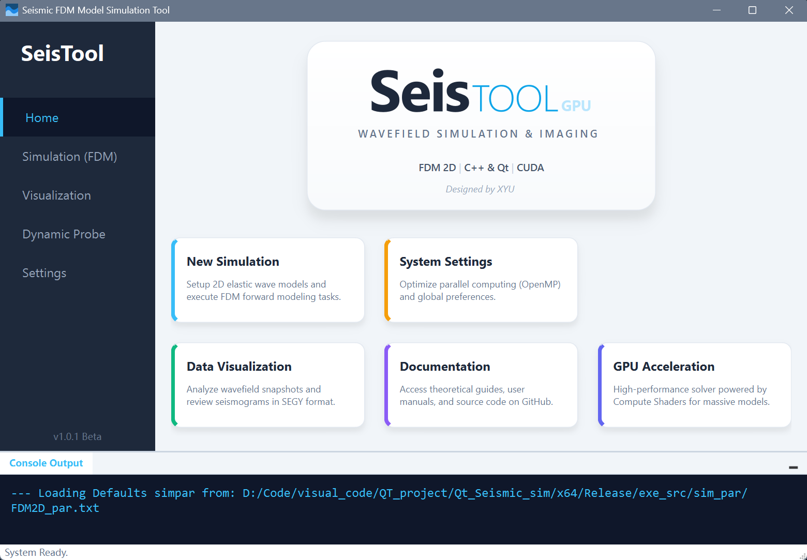
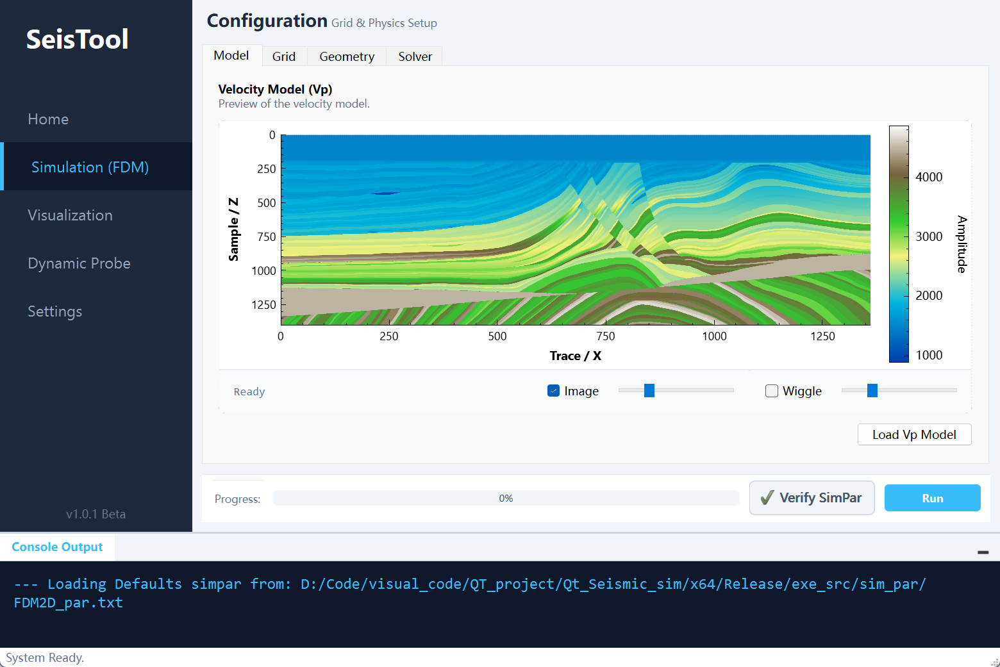
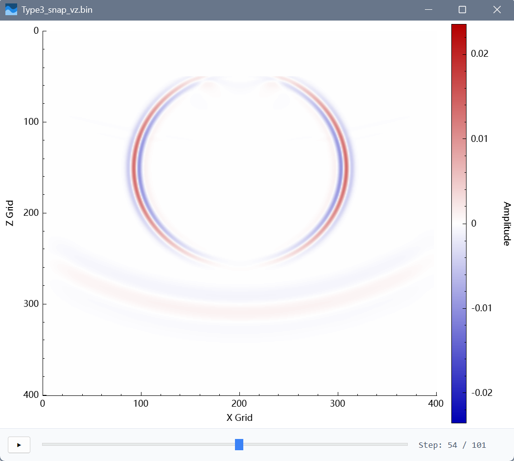
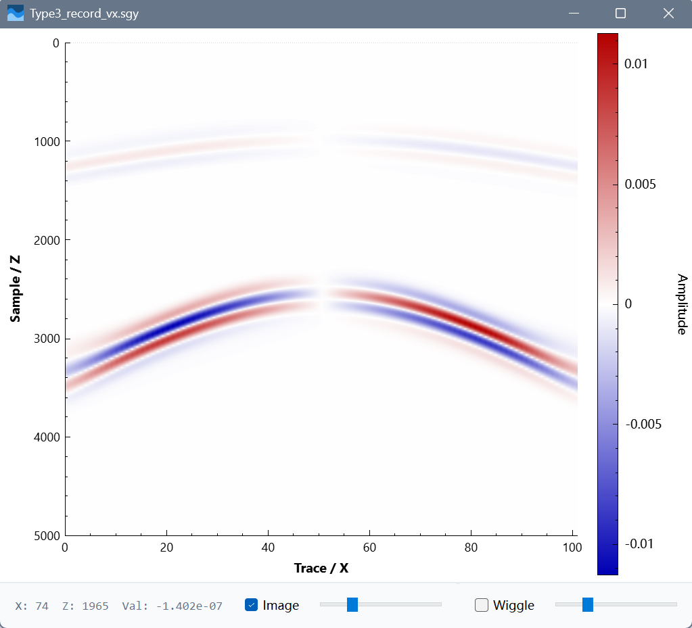

基于Qt、C++的Seis_Simulation地震波场模拟软件
Seis-FDM-Tool: High-Performance 2D Elastic Wave Simulation
高性能二维弹性波场模拟系统(CPU)技术手册
简介
Seis-FDM-Tool 是一款基于 Qt、C++ 的高性能二维弹性波场模拟软件。它实现了二维各向同性弹性波方程（P-SV波）的高精度数值模拟。
该软件结合了 C++17 的高性能计算能力与 Qt 的现代化图形界面，旨在解决传统科学计算程序“交互差、配置难、可视化弱”的痛点。核心计算引擎采用 OpenMP 并行加速和内存扁平化技术，能够在大规模网格下实现近实时的波场模拟。
界面展示
程序主页

模型参数页面

波场输出

地震记录输出

1. 项目简介 (Introduction)
Seis-FDM-Tool 是一款专为地球物理研究和教学设计的专业级桌面应用程序。它实现了二维各向同性弹性波方程（P-SV波）的高精度数值模拟。
该软件结合了 C++17 的高性能计算能力与 Qt 的现代化图形界面，旨在解决传统科学计算程序“交互差、配置难、可视化弱”的痛点。核心计算引擎采用 OpenMP 并行加速和 内存扁平化 技术，能够在大规模网格下实现近实时的波场模拟。
Seis-FDM-Tool is a professional-grade desktop application for 2D elastic wavefield forward modeling. Built with C++17 and Qt, it combines a modern user interface with a highly optimized Finite Difference Method (FDM) engine, featuring 8th-order spatial accuracy and advanced boundary conditions.
2. 理论基础 (Theoretical Background)
2.1 地震勘探原理
利用人工激发的地震波在地下介质中传播的规律，推断地下岩层的性质和形态。
- 震源 (Source): Ricker 子波，支持集中力源 (Point Force)。
- 传播 (Propagation): 波在非均匀介质中传播，产生反射、折射、转换波。
- 接收 (Receiver): 模拟检波器阵列记录地面质点振动速度 ($v_x, v_z$)。
2.2 有限差分法 (FDM) 核心
本程序采用 交错网格有限差分法 (Staggered-Grid FDM) 求解速度-应力方程组。
- 波动方程 (P-SV波):
- 离散化精度:
- 空间: 8阶精度 (8th-Order)。采用长模板差分算子 (C1~C4)，极大压制数值频散，适用于大网格步长模拟。
- 时间: 2阶精度差分 (Leap-frog)。
- 稳定性: 需满足 Courant-Friedrichs-Lewy (CFL) 条件：
3. 核心技术亮点 (Key Features)
🚀 高性能计算内核 (HPC Kernel)
- 1D Flattening (内存扁平化):
- 放弃传统的
vector<vector>二维数组，将所有场变量展平为一维std::vector。 - 优势: 保证内存连续性，最大化 CPU 缓存命中率 (Cache Hit Rate)，消除指针跳转开销。
- 放弃传统的
- OpenMP 并行化:
- 核心差分循环采用
#pragma omp parallel for进行多线程加速。 - 支持根据 CPU 核心数动态调整并行度，充分利用现代多核处理器的算力。
- 核心差分循环采用
- 极速 I/O:
- 自定义二进制格式 (
.bin) 存储波场快照，读写速度比文本格式快 50 倍以上。
- 自定义二进制格式 (
🌊 复杂边界条件 (Boundary Conditions)
- PML (完全匹配层):
- 实现了基于分裂场 (Split-Field) 的 PML 边界条件，有效吸收来自人工截断边界的反射波。
- Free Surface (自由表面):
- 针对地表模拟，实现了 应力镜像法 (Stress Image Method)。
- 通过在表面上方设置“幽灵点”并赋予反对称应力值 ($\sigma{zz}^{ghost} = -\sigma{zz}^{inner}$)，精确满足地表牵引力为零 ($\sigma{zz}=0, \sigma{xz}=0$) 的物理条件。
- 特别优化了 8阶差分 在自由表面的实现，确保高阶精度下边界依然稳定。
🖥️ 现代化交互界面 (Modern UI/UX)
- 沉浸式布局: 采用 VS Code 风格的侧边栏导航 (Sidebar) + 多页堆叠 (Stacked Widget) 设计。
- 实时监控: 底部集成全局控制台 (Console) 和进度条，实时反馈计算状态，界面不卡顿（多线程架构）。
- 参数配置:
- 支持从
FDM2D_par.txt自动加载默认参数。 - Check & Preview: 运行前自动校验参数稳定性 (CFL条件)，防止计算发散。
- Thread Control: 可在设置页面动态调整 OpenMP 线程数。
- 支持从
📊 专业级可视化 (Visualization)
- 全能地震视图 (Seismic View):
- Overlay 技术: 独创的 变密度图 (Image) + 波形图 (Wiggle) 叠加显示模式。
- 双重控制: 底部提供独立的滑块，分别调节 Image 的对比度 (Contrast) 和 Wiggle 的增益 (Gain)。
- 专业的色标系统:
- 内置 Seismic (Red-White-Blue), Grayscale, Jet, Terrain 等多种地质色标。
- 支持对称归一化显示，确保零值对应白色背景。
- 交互操作: 鼠标滚轮缩放、拖拽平移、右键菜单复位、所见即所得截图。
4. 软件架构 (Software Architecture)
4.1 模块划分
该项目采用模块化设计，实现 UI 与计算逻辑的彻底解耦：
- GUI 层 (
Qt_Seismic_fdm2d):- 负责界面渲染、用户交互、信号槽连接。
- 管理
QStackedWidget页面切换 (Home, Simulation, Visualization, Settings)。
- 数据层 (
SimulationContext/Parameters):- 封装模拟所需的所有参数（网格、系数、模型）。
SimulationContext在计算开始前初始化，包含了所有预计算的中间变量（如 PML 衰减系数、展平后的模型参数）。
- 计算层 (
SeismicUtils/FDM_elastic_2D):SeismicUtils: 提供数学工具（如 Ricker 子波生成、8阶差分系数计算、网格重采样）。FDM_elastic_2D: 核心物理引擎，不依赖任何 UI 组件，纯 C++ 实现。
- 绘图层 (
QCustomPlot/QCPSeismicWiggle):- 继承
QCPAbstractPlottable实现高性能地震波形绘制。 - 实现了 LOD (Level of Detail) 降采样算法，保证在大数据量下的流畅显示。
- 继承
4.2 线程模型 (Threading Model)
为了防止界面假死，软件采用了 Worker Thread 模式：
- 主线程 (GUI): 处理点击事件、绘图刷新、参数设置。
- 工作线程 (Worker): 通过
QtConcurrent::run启动，执行FDM_elastic_2D计算密集型任务。 - 通信机制: 工作线程通过
emit signals(如sig_updateProgress,sig_appendLog) 通知主线程更新 UI，实现线程安全。
4.3 文件结构
1 | Qt_Seismic_fdm2d/ |
5. 使用指南 (User Guide)
5.1 启动与配置
- 进入 Simulation 页面。
- Grid & Model: 设置网格大小 (
NX,NZ) 和间距 (dx,dz)。可点击 “Load Vp Model” 预览速度模型。 - Geometry: 设置震源位置 (
Source X/Z)、检波器排列范围。 - Numerical: 设置时间步长 (
dt)、总步数 (nt)、边界条件类型。Type 1: 全区域 PML (适合无界空间)。Type 2: 仅边界 PML (节省计算量)。Type 3: 上表面自由边界 + 其他三面 PML (适合地表模拟)。
- 点击 Verify 按钮：检查参数是否满足稳定性条件。
5.2 运行模拟
- 点击 Run。
- 观察底部 Console Output 和 Progress 条。
- 模拟过程中，界面保持响应，可随时切换到 Settings 页面调整线程数。
- 完成后，数据会自动保存到
data/snap/。
5.3 数据可视化
进入 Visualization 页面，提供多种查看方式：
- Load SEGY Model: 查看输入的速度/密度模型。
- Wavefield Snapshots: 加载
.bin快照文件，拖动时间滑块查看波场传播。 - Seismic Records: 加载地震记录（共炮点道集）。
- 使用 Overlay View 模式，同时观察波形细节和能量强弱。
- 支持导出标准 SEGY 格式数据。
6. 环境依赖与构建 (Build & Install)
前置要求 (Prerequisites)
- IDE: Visual Studio 2019 或 2022 (推荐)。
- Qt: 安装 Qt 5.15 或更高版本，并配置 VS Qt Tools 插件。
- Libraries:
- Eigen 3: 需将头文件路径添加到项目包含目录。
- QCustomPlot 2.1: 用于绘图（已集成在源码中）。
- OpenMP: 必须在编译器选项中开启 (
/openmp)。
编译步骤 (Steps)
- 使用 Visual Studio 打开
.sln或.pro文件。 - 确保构建模式为 Release (Debug 模式下大量循环计算会非常慢)。
- 点击 Build Solution (生成解决方案)。
- 运行生成的可执行文件。
7. 版权与授权说明 (License)
项目源码授权
本项目（Seis-FDM-Tool）的源代码采用 MIT License。允许个人及商业用途的自由修改和分发，但需保留原始版权声明。
第三方库授权
本项目依赖以下第三方库，它们拥有各自的授权协议：
- Qt 6: 遵循 LGPL v3 (GNU Lesser General Public License v3)。
- QCustomPlot: 遵循 GPL v3。
- Eigen 3: 遵循 MPL2 (Mozilla Public License 2.0)。
在使用、分发或商业化本软件时，请务必遵守上述第三方库的许可协议。
主要维护者: XYU
当前版本: v2.1.0 Stable